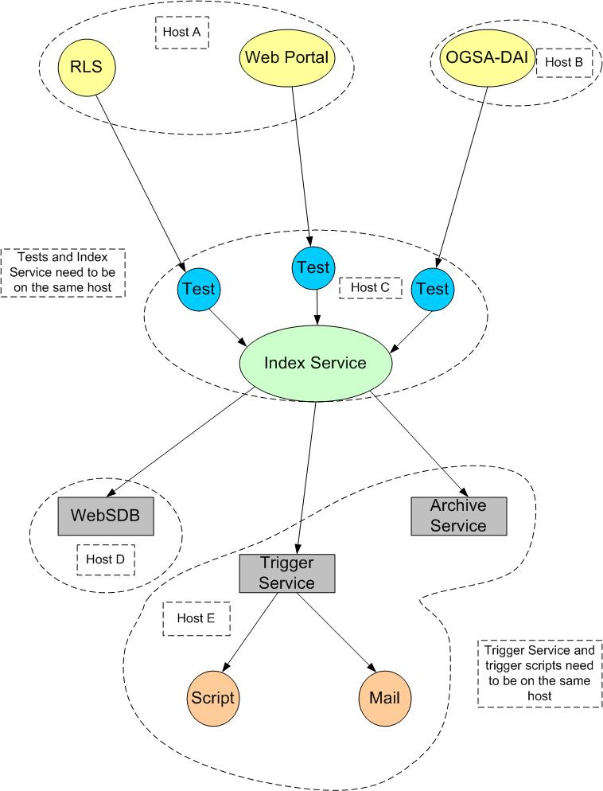

This article describes how to build a Monitoring Service by integrating four MDS components—the Index Service, Web Service Data Browser, Archive Service, and Trigger Service—with client-specific test and trigger scripts.
[general information about what this is and why the reader would be interested in this and what the reader can expect to be able to do with this information. ]
The following figure illustrates the MDS components of a simple monitoring framework:

This section describes the MDS components used to build a monitoring framework.
The MDS3 Index Service obtains and caches information about other services, and allows clients to query and/or subscribe to that data. The Index Service collects service data from various resources, which it publishes as one big piece of service data. Other services can query for service data elements or subscribe to be notified when they change. Multiple indexes can be used to obtain scalability to large numbers of services and configure the system so that it can tolerate failures (i.e. have multiple collectors of data.) The Monitering Service uses the Index Service to collect and publish information about the current status of services.
The Monitoring Service uses test scripts to run a query against a service and, depending on the results, judge whether it's up or down. These are very simple shell scripts that can be written by system administrators and do not involve any configuration. They run periodically on the same machine as the Index Service, wrap the results of these tests in XML, and then publish the resulting XML in the Index Service as service data.
The new MDS3 Archive Service is designed to store and allow time-based queries on Index Service data. The Monitoring Service uses the Archive Service to enable historical queries about component behavior.
The MDS3 Web Service Data Browser (WSDB) is a customizable display client for service data exposed by grid services. In the Monitoring Service, the WSDB allows users to query both the Index Service and the Archive Service to determine the current and past status, respectively, of the client's components.
The MDS3 Trigger Service provides functionality such as an email gateway to let system administrators know when services fail (the email IDs of the recepients are generated when the XSLT is performed.) A trigger script may be a simple shell script or a wrapper around other applications such as a grid service clients or mail clients. It is configured with a set of Xpath conditions and, for each condition, an action to be performed when the condition is satisfied plus an optional XSLT stylesheet. The following briefly describes the Trigger Service process:
Before you can set up a Monitoring Service, you need to download the following software:
[Once the service has been packaged, need to include installation instructions.]
[These need to be much more specific]
The following table describes suggested procedures for setting up the monitoring framework for a typical scenario: